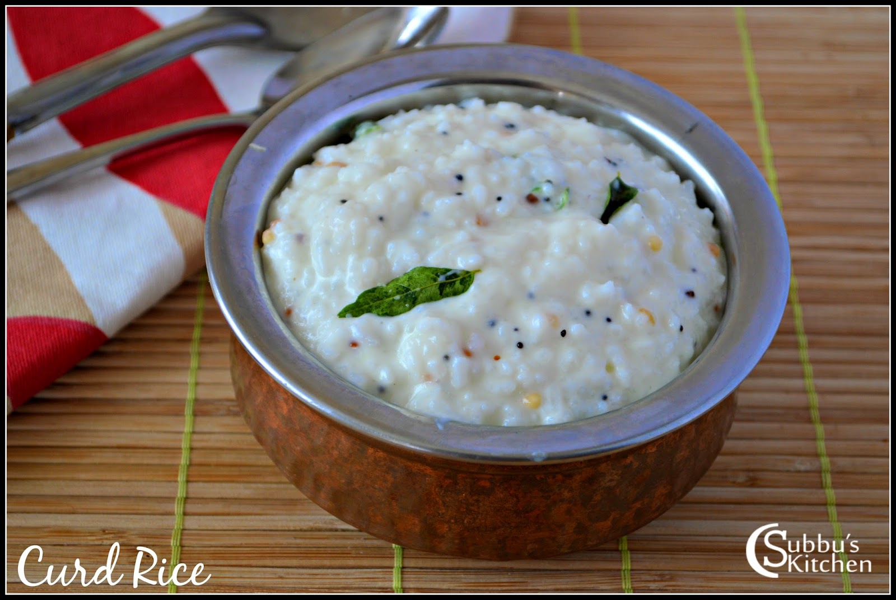

Curd rice

Thayir Sadam-A Traditional South Indian recipe
Ingredients
- 1 cup cooked rice (preferably soft or slightly overcooked rice)
- 1 cup curd (plain yogurt) (fresh, not too sour)
- ¼ cup milk (optional, to keep it creamy)
- Salt to taste
Steps
- Cook the rice soft (use slightly more water than usual). Let it cool completely.
- Mash the rice lightly with the back of a spoon or your hand. It should be slightly mushy but not a paste.
- Add curd and milk to the cooled rice. Mix well.
- Add salt to taste and stir.
Home